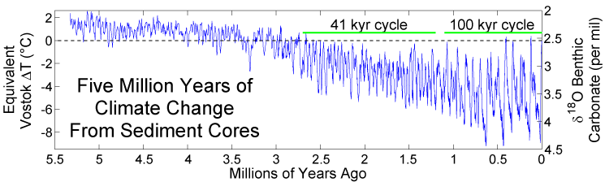
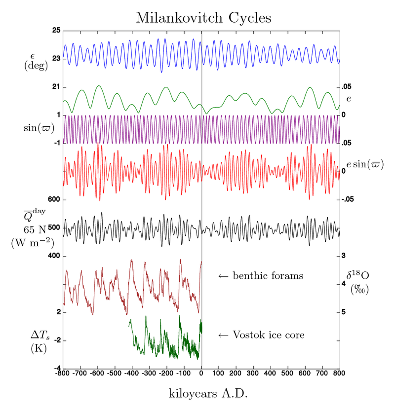
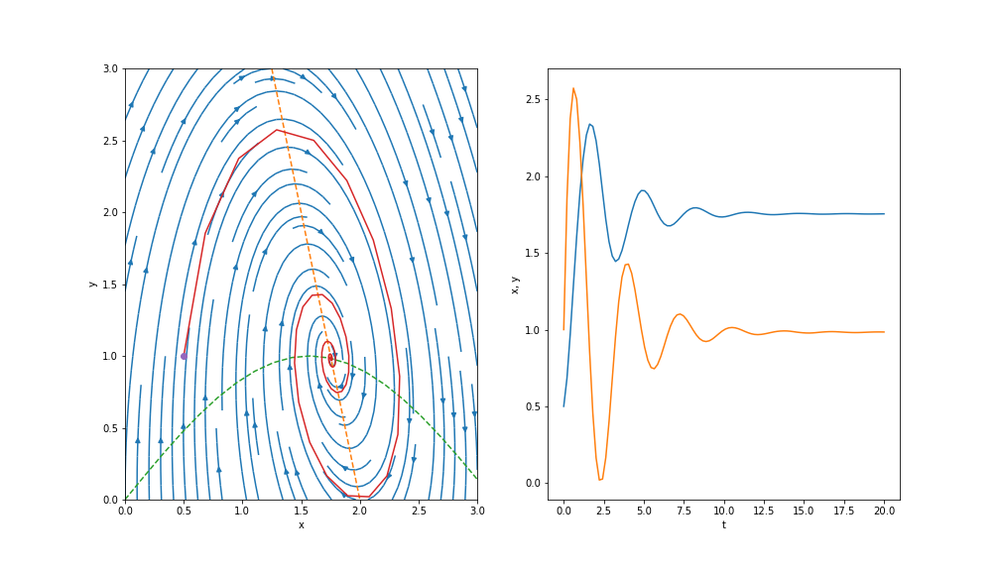

19 Ice ages I: an introduction
Our next investigation will take us to the topic of fast-slow systems in order to posit toy mathematical models for ice ages.
19.1 Background
We have mainly been concerned about time periods in the decades, but it is now time to discuss much longer time periods. In particular, we are interested in the Pleistocene era, which lasts from around 2.5 million years go to 11,700 years ago; this period marked the evolution of Homo sapiens. Begin by examining this figure:

{kind=link}
This figure indicates temperature changes tracked via various measures at different locations. The top two graphs show the temperatures derived from two different ice core measurements. The lower curve is the total ice cover. In this figure, you see evidence for the four complete glacial cycles with the Earth temperature dropping into the ice ages. A key observation concerns the regular periodic behaviour, with regular cycles appearing every 100k years.
Turn now to this graph: 
This graph goes back even further. The key observation is that between 1 million and 2.5 million years, the periods seem to be predominantly 41k years. Thus sudden transition is referred to as the Mid-Pleistocene Transition (MPT). The question of how or why the periods can suddenly change in such a manner is referred to as the 100,000-year problem.
19.2 Milankovitch cycles
The most natural theory to explain the ice age periods is to consider that the Earth’s orbit is affected by the gravitational attractions of the Sun, Moon, and the other planets. The complex interaction results in a slow, cyclic change in three important parameters of the orbit (Taylor 2005):
The eccentricity of the ellipse that the Earth describes in its orbit around the Sun each year (100kyr);
The angle between the equatorial plane and the orbital plane, known as the Earth’s obliquity (41kyr);
The precession of the spin axis around the normal to the orbital plane (20kyr).
The name given to these cycles is Milkankovich cycles.
However, the key problem is that the Milankovich cycles do not seem to explain the MPT problem. The Milankovich cycles exhibit the necessary periods on both the 100kyr scale and 41kyr scale, but it cannot explain why there was a sudden transition. Moreover, the response of EBMs to the 100kyr forcing (due to the eccentricity) is not enough to explain why this forcing period takes precedence since it is the 41kyr cycle due to the obliquity that produces the largest effect on the solar radiation.

{kind=link}
19.3 The mathematician’s perspective on models
We start with some discussion of the perspective of a mathematician. The last few weeks, we have been studying models of Planet Earth that take the form of first-order autonomous systems: \[ C \frac{\mathrm{d}T}{\mathrm{d}t} = G(T), \] or perhaps in the more recognisable ‘dynamical-systems’ form of \[ \dot{x} = f(x), \] for some function \(x = x(t)\). Because this is such a simple model, the analysis of the time-dependent evolution can be done on a phase line. Solutions can only exhibit two behaviours as \(t \to \infty\): they can tend towards a fixed point or they can diverge (to \(\pm \infty\)).
There are numerous ways to extend the basic EBM. For instance:
(Latitude variation) Add latitude variation, with \(G \mapsto G(y, T)\). Indeed this is what we had done in the last few chapters, and using a toy model (Newton’s law of cooling) that imposes a driver \(k(\bar{T} - T)\) into the ODE.
(PDEs) A more accurate model is to add a diffusion term, e.g. \(k \nabla^2 T\). The Laplacian operator is then turned into a surface derivative in spherical coordinates along the planet. This turns the equation into a PDE, so is more involved to solve.
(Non-autonomous forcing) We can consider the addition of temporal forcing, for instance, \[ G \mapsto G(T) + \epsilon f(t). \] This would model, for instance, some oscillatory source input. For instance, this might model extra oscillatory effects due to the influence of the other planets.
(Systems of DEs ) We might be interested in extending the model so that, in addition to modelling the evolution of the temperature, we also model the evolution of CO2 in the atmosphere. Or we might want a model where the albedo, itself, can evolve in time. An example of such a model is \[ \begin{aligned} C \frac{\mathrm{d}T}{\mathrm{d}t} &= Q[1 - a(t)] - \sigma \gamma T^4, \\ D \frac{\mathrm{d}a}{\mathrm{d}a} &= a_{\text{eq}}(T) - a. \end{aligned} \]
The above provides a model for ice sheet dynamics.
19.4 Phase plane analysis for two-dimensional systems
Coming back now to the standard non-autonomous system of two ODEs, we have \[ \begin{aligned} \dot{x} &= f_1(x, y), \\ \dot{y} &= f_2(x, y). \end{aligned} \] What is the difference between these kinds of systems and the simpler 1D equations? The main difference is that the analysis is done in the phase plane given by \((x, y)\). Fixed points lie in the phase plane, but now there is the additional possibility of oscillations or circular orbits.
An example of this is the system \[ \begin{aligned} \dot{x} &= y - g(x), \\ \dot{y} &= h(x) - y. \end{aligned} \]
For instance, choosing \(h(x) = 4(2-x)\) and \(g(x) = \sin x\) yields the following phase plane diagram: 
We see there exists a fixed point at where the two nullclines (dashed) intersect. Analysis near this fixed point would reveal that solutions encircle in a clockwise direction and tend towards the fixed point. This is shown by the solution plot on the right.
Therefore, one way to extend our EBMs is to consider coupling to another component. Keep this in mind as this is where we will be going in the next lecture.